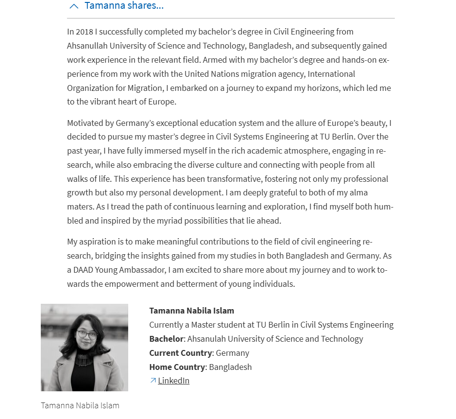
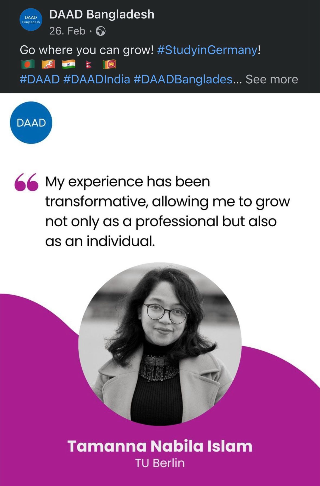
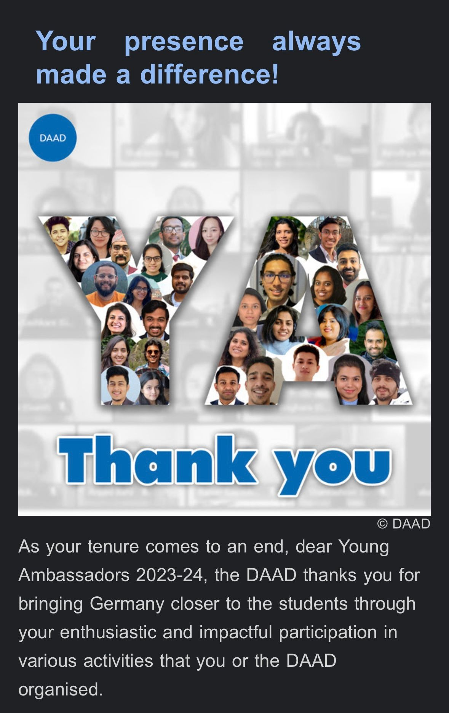
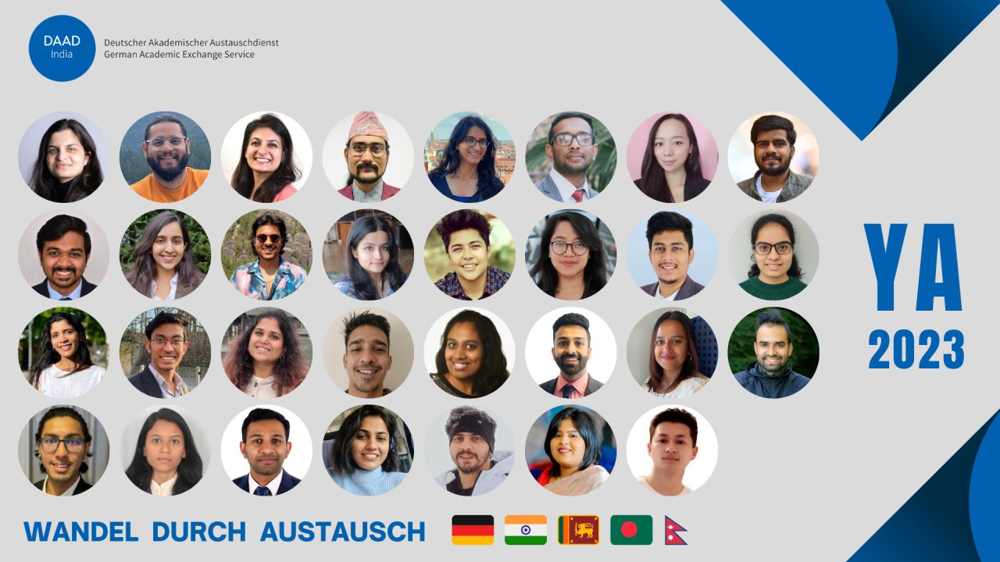
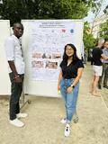

Voluntary Work
2023 — 2024
DAAD Young Ambassador, DAAD India
Volunteered with the German Academic Exchange Service, sharing first-hand guidance on studying and researching in Germany with prospective international students.




2023
Greening Africa Together (GATo) — Senegal Peace Forest Project
Carbon footprint calculation and waste management strategy development aligned with the Sustainable Development Goals; presented as a team poster.

2016 — 2018
Executive Member, Women Leadership — Convero, Dhaka
Organised initiatives supporting women's leadership development.
Membership
2018 — current
Associate Member, Institution of Engineers, Bangladesh
Professional membership supporting the engineering community in Bangladesh.